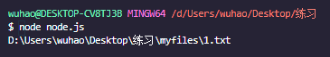
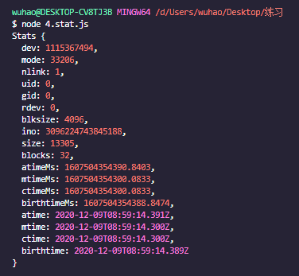
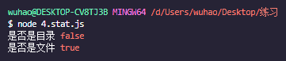
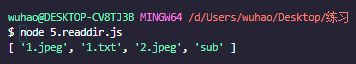
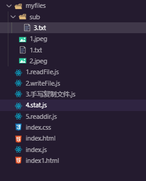
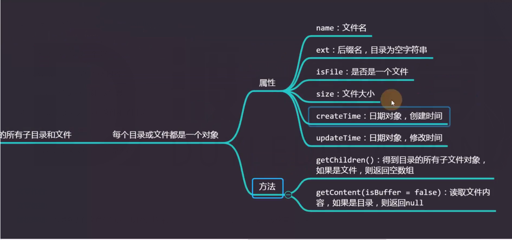

一、IO
IO:input output 既对外部设备的输入输出
外部设备：磁盘、网卡、显卡、打印机、其他
IO速度往往低于内存与CPU的交互速度
二、路径问题
在require()中使用./ ../等是相对于当前文件
其他文件路径如果是相对路径，那么相对的是命令提示符，所以这种情况下为了避免在命令行中执行文件时，找不到路径对应的文件，我们最好使用绝对路径
如果想要在文件中使用相对路径，那么需要借助path模块将相对转换成绝对路径，这样在命令行中执行文件时就不用担心问题2了

三、fs模块
使用fs模块应该先引入fs const fs = require(‘fs’);
- fs.readFile(“文件路径”):读取一个文件
const fs = require("fs");
const path = require("path");
const filename = path.resolve(__dirname, "./myfiles/1.txt");
fs.readFile(filename, (err, content) => {
console.log(content);
console.log(content.toString("utf-8"));
});
text();
|
- fs.writeFile():向文件写入内容
const fs = require("fs");
const path = require("path");
const filename = path.resolve(__dirname, "./myfiles/1.txt");
async function text(){
await fs.promises.writeFile(filename,'abc','utf-8');
await fs.promises.writeFile(filename,'护肤师傅说的',{
flag:"a"
});
const buffer = Buffer.from("ftftfty","utf-8");
await fs.promises.writeFile(filename,buffer);
console.log('写入成功');
}
text();
|
- fs.stat():获取文件或目录状态信息
const fs = require("fs");
const path = require("path");
const fileName = path.resolve(__dirname,'./myfiles/1.jpeg');
async function text(){
const stat = await fs.promises.stat(fileName);
console.log("是否是目录",stat.isDirectory());
console.log("是否是文件",stat.isFile());
}
text();
|


- fs.readdir():获取目录中文件和子目录
const fs = require("fs");
const path = require("path");
const dirname = path.resolve(__dirname,'./myfiles/');
async function text(){
const pathes = await fs.promises.readdir(dirname);
console.log(pathes);
}
text();
|


- fs.mkdir():创建目录
const fs = require("fs");
const path = require("path");
const dirname = path.resolve(__dirname,'./myfiles/1');
async function text(){
await fs.promises.mkdir(dirname);
console.log("创建目录成功");
}
text();
|
- fs.exists():判断文件或目录是否存在
const fs = require("fs");
const path = require("path");
const dirname = path.resolve(__dirname,'./myfiles/1');
async function text(){
await fs.promises.exists(dirname);
console.log("创建目录成功");
}
text();
|
四、fs模块同步异步的问题
4.1 回调函数与promiseAPI
- 为什么用回调函数(异步)来处理读取的内容而不是直接返回一个值？
- 因为读文件需要一段时间，读文件属于IO操作，IO操作的时间远远大于内存与cpu交互的时间
- ES6之后，出现promiseAPI进行异步操作
async function text(){
const content = await fs.promises.readFile(filename,'utf-8');
console.log(content);
}
|
4.2 Sync
官方也给出了同步处理的执行方式Sync，在读取文件时，程序阻塞，直到文件读取完毕才继续执行，及其影响性能
通常，在程序启动时运行有限的次数即可，后面再也不会做了，这个时候可以用async，这样只会影响一开始启动的时间
console.log(fs.readFileSync(filename,'utf-8'));
|
五、练习
- 手写复制文件
const fs = require("fs");
const path = require("path");
async function text(){
const fromFileName = path.resolve(__dirname,'./myfiles/1.jpeg');
const buffer = await fs.promises.readFile(fromFileName);
const toFileName = path.resolve(__dirname,'./myfiles/2.jpeg');
await fs.promises.writeFile(toFileName,buffer);
}
text();
|
- 读取一个目录中的所有子目录和文件

const fs = require("fs");
const path = require("path");
class File {
constructor(filename, name, ext, isFile, size, createTime, updateTime) {
this.filename = filename;
this.name = name;
this.ext = ext;
this.isFile = isFile;
this.size = size;
this.createTime = createTime;
this.updateTime = updateTime;
}
async getContent(isBuffer = false) {
if (this.isFile) {
if (isBuffer) {
return await fs.promises.readFile(this.filename);
} else {
return await fs.promises.readFile(this.filename, "utf-8");
}
}
return null;
}
async getChildren() {
if (this.isFile) {
return [];
}
let children = await fs.promises.readdir(this.filename);
children = children.map(name => {
const result = path.resolve(this.filename, name);
return File.getFile(result);
});
return Promise.all(children);
}
static async getFile(filename) {
const stat = await fs.promises.stat(filename);
const name = path.basename(filename);
const ext = path.extname(filename);
const isFile = stat.isFile();
const size = stat.size;
const createTime = new Date(stat.birthtime);
const updateTime = new Date(stat.mtime);
return new File(filename, name, ext, isFile, size, createTime, updateTime);
}
}
async function readDir(dirname) {
const file = await File.getFile(dirname);
return await file.getChildren();
}
async function test() {
const dirname = path.resolve(__dirname, "./myfiles");
const result = await readDir(dirname);
const datas = await result[0].getChildren();
console.log(datas);
}
test();
|